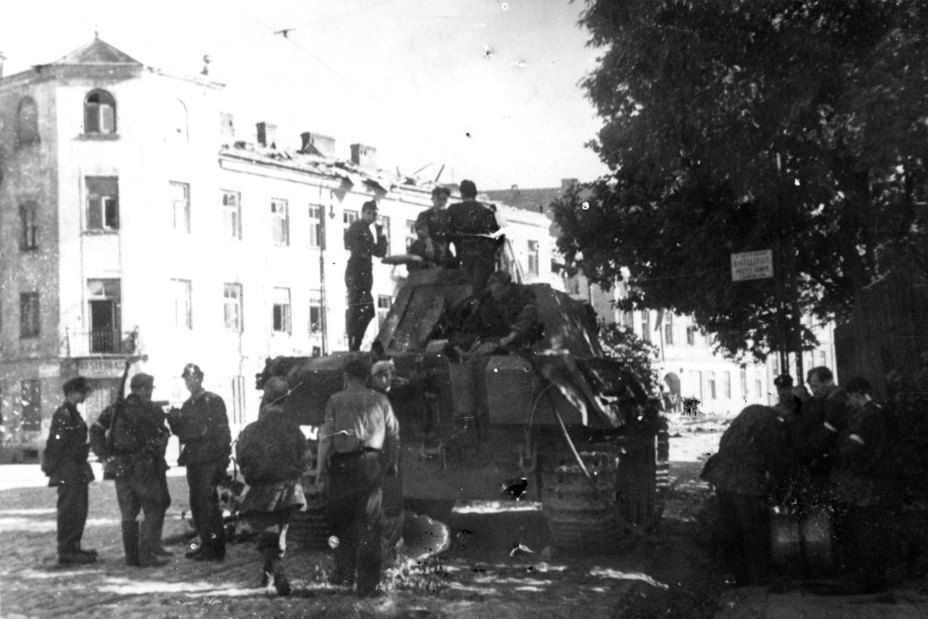
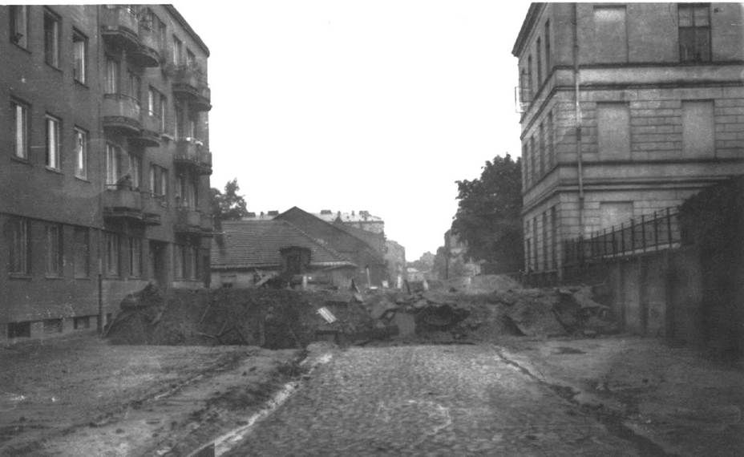
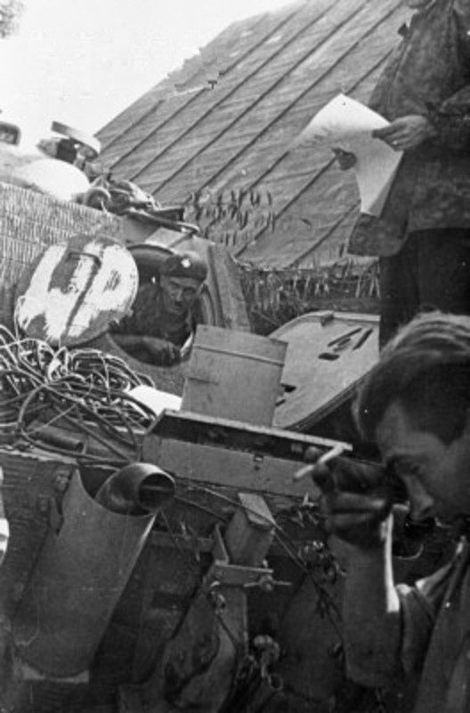
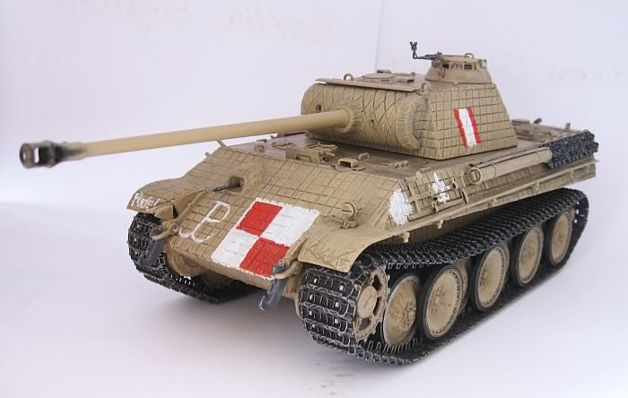
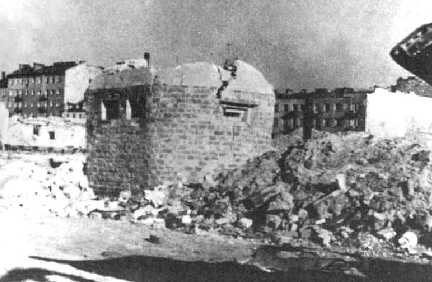

Польские «Пантеры» в Варшавском восстании
3 августа, 21:10

Интересная статья про использование трофейных немецких "Пантер" в ходе Варшавского восстания в 1944 году. Раньше про это как-то не доводилось читать.
Всяко интереснее бредней польского министра обороны про "величайшее сражение второй мировой войны".
Польские «Пантеры» в Варшавском восстании
5 августа 1944 года Варшава была охвачена восстанием. На улицах города пятый день гремели бои между немецкими подразделениями и бойцами Армии Крайовой. Но в концлагере Генсиувка жизнь шла своим чередом: администрация была уверена, что повстанцам не хватит сил для взятия укреплений лагеря. Когда к Генсиувке приблизился танк «Пантера», охрана поначалу не придала этому значения. Но когда машина смяла баррикаду перед входом и выломала стальные ворота, один из часовых от испуга вывернул на себя миску горячего супа. Стало ясно, что эта «Пантера» воюет на стороне варшавских повстанцев.
Когда грянула «Буря»
В конце июля 1944 года, на заключительном этапе операции «Багратион», советские войска вступили на территорию Польши и вышли на ближние подступы к Варшаве. Для польского правительства в изгнании, очень холодно относившегося к СССР, это означало угрозу, что страна окажется под властью просоветского руководства. Чтобы не допустить такого развития событий, эмигрантское правительство инициировало исполнение в Варшаве плана «Буря». Согласно его положениям, Армия Крайова (АК) должна была захватывать населённые пункты прежде, чем они окажутся в руках Красной армии, и тем самым сохранять контроль над как можно бо́льшими польскими территориями.
Движение сопротивления Варшавы, костяком которого была АК, получило 29 июля приказ поднять в Варшаве восстание. Для этого в распоряжении командующего Армией Крайовой Тадеуша Коморовского было примерно 50 тысяч бойцов. Многие из них были несовершеннолетними (от 13 лет), все без исключения — плохо вооружены. Хуже всего обстояли дела с противотанковыми средствами. Повстанцы располагали всего двумя 37-мм противотанковыми пушками, тремя десятками противотанковых ружей и ручных гранатомётов, а также 12 тысячами бутылок с горючей смесью. Последние хоть и были весьма примитивным оружием, но в условиях городского боя могли причинить вермахту немало хлопот.
Немецкий гарнизон значительно уступал по численности полякам. Под ружьём у военного коменданта Варшавы Райнера Штаэля было 16 тысяч человек. К несчастью, их уровень подготовки и оснащения был намного выше повстанческого, а оборона опиралась на множество укреплённых точек. Кроме того, варшавский гарнизон имел в своём составе пять «Тигров», несколько «Пантер» и четыре средних танка Pz IV. Плюс — около полусотни самоходных орудий. Штаэль в любой момент мог рассчитывать на то, что ему поможет авиация и артиллерия. В довершение всех бед, немецкая агентура вскрыла точную дату начала восстания.
Генерал Коморовский понимал, что начинает опасное и даже авантюрное предприятие. Он рассчитывал на то, что Красная армия войдёт в Варшаву на второй-третий день восстания, и на помощь британских союзников. Надеждам главы АК не было суждено сбыться, и с первых перестрелок на улицах Варшавы 1 августа 1944 года поляки оказались почти полностью предоставлены сами себе.
Были ваши — стали наши
2 августа три (по другой версии — два) немецких танка «Пантера» атаковали позиции повстанцев на улице Карольковой. Они легко преодолели баррикаду, сложенную поляками из балок, досок, мебели и мусорных баков. Когда танки дошли до второй баррикады, бойцы повстанческого батальона «Зоська», державшего оборону на этом участке, атаковали их бутылками с горючей смесью. Одна «Пантера» загорелась, а её экипаж быстро перебрался на броню другого танка.

Баррикада на улице Карольковой
Два оставшихся танка дошли до стен старого еврейского кладбища, где снова попали под удар бойцов АК из отряда Евгения Коэхера. Повстанцы забросали «Пантеры» «гранатами Гамона» — двухкилограммовыми матерчатыми мешками с пластиковой взрывчаткой. Бомбы перебрасывали на танки через стену, а действиями метателей руководил корректировщик, сидевший на стене. У одной из «Пантер» повредило ходовую часть, танк врезался в столб. Последняя «кошка», пытаясь уйти от угрозы, развернулась к площади Керцелего, но было поздно. Один из бойцов батальона «Зоська» то ли из гранатомёта PIAT, то ли из фаустпатрона попал в заднюю часть её башни. Машина потеряла управление, покатилась по улице под уклон и с разгона врезалась в деревянный дом. С «Пантерами» было покончено, а десять немецких танкистов попали в плен к полякам.
Повстанцы осмотрели две подбитые «Пантеры» и пришли к выводу, что их можно отремонтировать. Пригрозив оружием, они пытались привлечь к ремонту одного из пленных, но тот категорически заявил, что в полевых условиях, без ремонтной мастерской, это сделать невозможно. К счастью, один из бойцов «Зоськи», инженер Ян Луневский, имел богатый опыт ремонта немецких танков. Он принялся за работу и смог запустить двигатели обеих «Пантер», за что генерал Коморовский наградил его медалью Серебряного креста Заслуги с мечами. Оба танка вошли в состав взвода «Вацек». На борт первой «Пантеры» нанесли надпись «Пудель» (в честь погибшего бойца АК Тадеуша Тычинского, имевшего такое прозвище). Правда, экипаж звал свою машину «Магдой». Второму танку имени не дали, ограничившись аббревиатурой WP (Войско Польское) на борту.

Польский инженер Ян Уневский чинит одну из трофейных «Пантер»
Поляки собрали в экипажи «Пантер» опытных бойцов, знакомых с артиллерийским вооружением и пулемётами, имевших опыт вождения разной техники, включая и бронированную. Повстанцы также смогли добыть снаряды для 75-мм орудий «Пантер» и около 400 литров бензина. Главными проблемами польских танкистов теперь были сложность конструкции «Пантер» и угроза разрядки аккумуляторов — запасных у повстанцев не было.
В бою под польским флагом
«Магду» починили первой, и 3 августа 1944 года «Пантера» вышла на позицию по улице Окоповой. Целью для неё назначили башню костёла св. Августина. Немецкие снайперы (по другой версии — пулемётчики), закрепившиеся на ней, имели прекрасные сектора обстрела и сильно мешали жить повстанцам. Первый выстрел «Пантеры» цель не уничтожил, потому что снаряд застрял в стене, не взорвавшись. Со второго попадания с огневой точкой вермахта было покончено.
«Магда» переехала к казармам немецкой полевой жандармерии в школе по улице Железной и позициям немцев у госпиталя св. Софии. Бойцы АК пытались организовать здесь штурм, но оказались прижаты к земле пулемётным огнём. «Пантера» сделала три выстрела, обрушив угол школы и уничтожив пулемётчиков. Затем танк подошёл поближе к зданию, но оказалось, что у орудия появились проблемы с наведением. Механику-водителю пришлось загнать танк на небольшую груду развалин, чтобы орудие оказалось приподнятым. Следующей жертвой трофейной «кошки» оказался немецкий пулемёт на балконе школы. И хотя повреждённая «Пантера» была вынуждена выйти из боя, к 17:00 танк вернулся, так что вскоре немцы были выбиты из этого опорного пункта и ушли через подземные коммуникации.
Повстанцы на броне танка «Магда»
Бенефисом «Магды» стала атака на концентрационный лагерь Генсиувка. Немцы содержали в нём евреев со всей Европы, поляков и ещё за несколько дней до восстания начали планомерно уничтожать узников. Лагерь должны были взять под контроль бойцы батальона «Зоська» и отряда «Брода 53». «Магда» поддерживала огнём и бронёй действия взвода «Феликс», который непосредственно штурмовал концлагерь.
«В атаке Генсиувки принял участие только один танк, поскольку второй находился в резерве, и должен был своим огнём сдерживать продвижение немецких войск, которые атаковали наши позиции с западной стороны Воли. Строения лагеря были не деревянными, а кирпичными, и поэтому являлись выгодной оборонительной позицией для войск вермахта», — так вспоминал этот бой польский танкист Витольд Бартницкий.
Переехав баррикаду и вышибив ворота, «Пантера» въехала на территорию концлагеря. Немецкие солдаты открыли по танку ураганный огонь из автоматического оружия, который не причинил машине ни малейшего вреда. Экипаж «Магды» одну за другой уничтожил все охранные вышки на территории Генсиувки, разгромил центральный фасад лагерной администрации, подавил несколько пулемётных точек. Благодаря поддержке «Пантеры» поляки захватили концлагерь и освободили свыше 340 заключённых, потеряв одного своего бойца убитым и одного раненым. Тяжёлое ранение также получила санитарка С. Крассовская, оказывавшая под огнём помощь раненому.
На улицах и кладбищах Варшавы
В первые дни восстания полякам удалось добиться некоторых успехов, но немецкий натиск возрастал день ото дня. 5 августа 1944 года вермахт начал против повстанцев широкомасштабное контрнаступление с использованием танков, тяжёлой артиллерии и ударной авиации. Немцы уничтожали не только тех, кто оказывал вооружённое сопротивление, но и мирных жителей Варшавы. Повстанческие «Пантеры» в эти дни помогали полякам удерживать позиции на улице Окоповой и защищать позиции на еврейских кладбищах.
7 августа у «Магды» вышел из строя воздушный фильтр двигателя, а её разрядившиеся аккумуляторы пришлось заменить на автомобильные. Танк занял позицию на перекрёстке улиц Окоповой и Мирецкого. «Пантера WP» исполняла роль мобильного орудия, помогая отражать немецкие попытки прорвать фронт повстанцев.

Модель трофейного танка «WP»
На следующий день танки Армии Крайовой вступили в бой с бронетехникой вермахта. «WP» занимала позицию за баррикадой по улице Мирецкого. Внезапно в башню этой «Пантеры» один за другим угодили три немецких снаряда — либо от немецкой самоходки, либо от среднего танка Pz IV, находившегося рядом с ней. Три польских танкиста были ранены осколками, отколовшимися от внутренней стороны брони. Внутри машины возник пожар. Водитель «Пантеры WP» Ежи Мискевич сумел вывести танк из-под обстрела и спрятать его за угол здания. Бойцы АК помогли экипажу выбраться и оказали первую медицинскую помощь. Пожар тоже потушили быстро, так что «Пантера» не успела получить серьёзных повреждений.
Самоходное орудие уничтожила «Магда». После чего повстанцы, которые понесли большие потери и остались сотнями с шестью человек в строю, отошли с улицы Мирецкого к еврейскому кладбищу и заводу Пфайфера. В десятом часу утра 8 августа «Магда» помогала отражать атаку немецких войск, которые поддерживали три немецких танка (по другим источникам — штурмовых орудия) и бронетранспортёр. Последний был в этом бою уничтожен.
10 августа 1944 года «Магда» осталась одна: у танка «WP» вышли из строя аккумуляторы, поэтому повстанцы были вынуждены его сжечь, перегрузив во вторую «Пантеру» остатки боеприпасов.
Последняя схватка «Магды»
11 августа немцы при поддержке четырёх «Штугов» перешли в наступление со стороны улицы Млынарской, пытаясь отрезать повстанцев от Старого города. Завязался ожесточённый бой. Чтобы избежать окружения, 300 бойцов АК вместе с «Пантерой» пошли на штурм немецких позиций.
«Магда» снесла несколько стен, прокладывая путь польской пехоте, и выскочила на два вражеских противотанковых орудия. Дуэль с первым оказалась для «Пантеры» удачной: немецкий снаряд не пробил броню, а ответный 75-мм залп танка превратил орудие в металлолом. Расчёт второй немецкой пушки был более везучим: они попали точно между башней и корпусом, заклинив «Пантере» башню. Теперь танк приходилось поворачивать всем корпусом, как самоходное орудие.

Оборонительный бункер концлагеря Генсиувка, расстрелянный танком «Магда»
Даже в таком состоянии «Магда» оказалась способной помочь восставшим отразить атаку немецкой бронетехники. Помогло ещё и то, что танкисты вермахта не горели желанием нарываться на поединок с «Пантерой». На новой позиции «Магду» поставили так, чтобы её орудие смотрело на улицу Повонзковскую, откуда постоянно атаковали немцы. Здесь «Пантера» Армии Крайовой приняла свой последний бой, прикрывая отход остатков батальона «Зоська». И когда у неё окончательно разрядились аккумуляторы, командир приказал экипажу поджечь танк и прорываться к Старому городу. Не повлияв на общий ход восстания, «Пантеры» помогли полякам одержать несколько побед, важнейшей из которых было освобождение концлагеря Генсиувка. Не будь танков, повстанцы вряд ли смогли бы это осуществить. Кроме того «Магда» и «WP» существенно уменьшили потери бойцов подразделений «Зоська» и «Феликс». Таким был боевой путь единственного польского танкового подразделения в Варшавском восстании 1944 года.
http://warspot.ru/6756-polskie-pantery-v-varshavskom-vosstanii - цинк
И еще несколько интересных исторических материалов.
1. http://amarok-man.livejournal.com/762596.html - Письмо Брежнева в ОГПУ с просьбой вернуть изъятый органами Браунинг.
2. http://kanchukov-sa.livejournal.com/6699987.html - Почему Воронеж не город-герой?
3. https://www.youtube.com/watch?v=CZKmr23fCtA - Реальные масштабы средневековых сражений. Факты против мифов
4. http://pandoraopen.ru/2016-08-03/za-chto-na-samom-dele-ubili-pavla-pervogo/ - За что на самом деле убили Павла Первого?